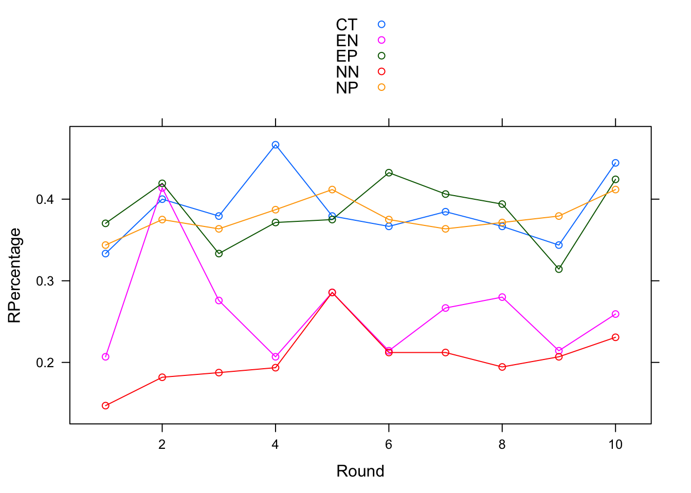

Main ANOVA: Cheating Percentage by Norm type, Frame type, Gender, and University
all<-aov(Percentage~Frame*Norm+Loc+Gender)
summary(all)
## Df Sum Sq Mean Sq F value Pr(>F)
## Frame 1 0.744 0.7445 4.376 0.0384 *
## Norm 1 0.046 0.0464 0.273 0.6024
## Loc 8 1.200 0.1500 0.881 0.5341
## Gender 1 0.541 0.5406 3.177 0.0770 .
## Frame:Norm 1 0.020 0.0201 0.118 0.7316
## Residuals 129 21.948 0.1701
## ---
## Signif. codes: 0 '***' 0.001 '**' 0.01 '*' 0.05 '.' 0.1 ' ' 1
## 39 observations deleted due to missingness
To explore the first hypothesis, that normative messages will decrease lying behavior, a factorial ANOVA was run with Norm type, frame type, gender, university, and a frame*norm interaction as the independent variables and percentage of dishonest behavior as the dependent variable. The main effect for Type of Frame yielded an F ratio of F(1,129) = 4.38, p = 0.04, indicating a significant difference between positive (M = 39.0%, SD = 42.32%) and negative (M = 23.36%, SD = 39.67%) frames. However, the F ratio investigating type of norm F(1,129) = 0.273, p = 0.6, revealed an extremely insignificant effect with both conditons just above 30% dishonesty. The main effect for gender yielded an F ratio F(1,129) = 3.18, p = 0.08, suggesting an effect that is approaching significance where males (M = 39.1%, SD = 44.5%) exceed the dishonesty levels of females (M = 25.7%, SD = 39.0%). This could become significant with greater experimental power.
Conditon Breakdown
independent<-aov(Percentage~Condition)
summary(independent)
## Df Sum Sq Mean Sq F value Pr(>F)
## Condition 4 1.007 0.2516 1.415 0.231
## Residuals 176 31.305 0.1779
pairwise.t.test(Percentage,Condition,p.adj = "none")
##
## Pairwise comparisons using t tests with pooled SD
##
## data: Percentage and Condition
##
## Control EN EP NN
## EN 0.304 - - -
## EP 0.754 0.167 - -
## NN 0.126 0.639 0.055 -
## NP 0.887 0.228 0.860 0.083
##
## P value adjustment method: none
Despite the non-significance of the overall ANOVA, a follow up test was run to check relationships of conditions to each other, beyond the control value. Only one of these values approaches significance. The Empirical Positive treatment has more cheating on average than the Normative Negative treatment with p = 0.055. The table also allows us to check the significance of Hypothesis 2, which proposed that an interaction effect would lead to Empirical Negative messaging having higher levels of cheating than Empirical Positive messaging. There is no significant difference between the two Empirical conditions, despite the apparent effect of negatively framed messages found in the first ANOVA. Power issues also prevent any multiple comparisons correction from being interpretable.
Adding Risk Tolerance
lm1<-lm(Percentage~Frame*Norm+Risk_1+Gender)
summary(lm1)
##
## Call:
## lm(formula = Percentage ~ Frame * Norm + Risk_1 + Gender)
##
## Residuals:
## Min 1Q Median 3Q Max
## -0.5832 -0.2993 -0.1558 0.4250 0.9151
##
## Coefficients:
## Estimate Std. Error t value Pr(>|t|)
## (Intercept) 0.05113 0.10448 0.489 0.6254
## FramePositive 0.10466 0.09765 1.072 0.2857
## NormNormative -0.06000 0.09848 -0.609 0.5433
## Risk_1 0.03382 0.01489 2.270 0.0247 *
## GenderMale 0.08925 0.07046 1.267 0.2074
## FramePositive:NormNormative 0.01200 0.13660 0.088 0.9301
## ---
## Signif. codes: 0 '***' 0.001 '**' 0.01 '*' 0.05 '.' 0.1 ' ' 1
##
## Residual standard error: 0.4058 on 137 degrees of freedom
## (38 observations deleted due to missingness)
## Multiple R-squared: 0.0841, Adjusted R-squared: 0.05068
## F-statistic: 2.516 on 5 and 137 DF, p-value: 0.03258
One variable of interest for additional testing was Risk Tolerance, on a scale of 1-10 with 1 being the most risk averse. This variable is ordinal, but with enough levels that I decided to treat it as continuous. Interestingly, adding risk into the equation completely negates the previous significance of both frame and any chance at significance for gender. The latter of these relationships makes sense because studies have consistently found higher levels of risk among men than women. The former effect, however, is more of a mystery to explore. The following analyses look at the relationship between dishonesty and risk, as well as risk and the conditions.
Risk Exploration
cor.test(Percentage,Risk_1)
##
## Pearson's product-moment correlation
##
## data: Percentage and Risk_1
## t = 2.7045, df = 176, p-value = 0.007512
## alternative hypothesis: true correlation is not equal to 0
## 95 percent confidence interval:
## 0.05426301 0.33693863
## sample estimates:
## cor
## 0.1997534
lmrisk<-lm(Risk_1~Percentage)
summary(lmrisk)
##
## Call:
## lm(formula = Risk_1 ~ Percentage)
##
## Residuals:
## Min 1Q Median 3Q Max
## -5.5174 -1.4370 0.3006 1.5630 4.5630
##
## Coefficients:
## Estimate Std. Error t value Pr(>|t|)
## (Intercept) 5.4370 0.2126 25.573 < 2e-16 ***
## Percentage 1.0805 0.3995 2.705 0.00751 **
## ---
## Signif. codes: 0 '***' 0.001 '**' 0.01 '*' 0.05 '.' 0.1 ' ' 1
##
## Residual standard error: 2.252 on 176 degrees of freedom
## (3 observations deleted due to missingness)
## Multiple R-squared: 0.0399, Adjusted R-squared: 0.03445
## F-statistic: 7.315 on 1 and 176 DF, p-value: 0.007512
riskaov<-aov(Risk_1~Norm*Frame)
summary(riskaov)
## Df Sum Sq Mean Sq F value Pr(>F)
## Norm 1 7.6 7.608 1.386 0.2411
## Frame 1 21.4 21.436 3.905 0.0501 .
## Norm:Frame 1 1.3 1.308 0.238 0.6262
## Residuals 141 774.0 5.490
## ---
## Signif. codes: 0 '***' 0.001 '**' 0.01 '*' 0.05 '.' 0.1 ' ' 1
## 36 observations deleted due to missingness
These three tests were used to check whether risk is a confounded variable that should not be included in the overall analysis. Specifically, the results of the third test checking an effect of frame type on risk score is a cause for concern F(1,141) = 3.91, p = 0.05, due to the experimental design. Risk tolerance was asked in the demographics section, which participants responded to at the very end of the experiment. Because the location of this question was not counterbalanced and asked before the message was seen, there could be a spillover effect of either the message on reported risk score or the actual cheating behavior itself on risk. The latter of these relationships would be predicted by the theory of cognitive dissonance, such that if participants reflect on the lying behavior they just displayed they could be more likely to report a higher risk tolerance. Neither of these potentially confounding effects can be eliminated without follow-up research with the counterbalancing.
Time-Series Analysis
The final hypothesis H3, was that positively framed messages would lead to honesty persisting longer through the ten rounds. We coded the data into lying averages per round, rather than per individual, to investigate this idea and split the round averages by condition. This setup allowed us to look at a multiple regression to predict the percentage of dishonesty based on condition and round number. The one drawback of this data setup is that it prevents any statistical analysis on an interaction between condition and round because the number of datapoints is too few to have sufficient degrees of freedom.
lm4<-lm(RPercentage~RCondition+factor(Round))
summary(lm4)
##
## Call:
## lm(formula = RPercentage ~ RCondition + factor(Round))
##
## Residuals:
## Min 1Q Median 3Q Max
## -0.058105 -0.016611 -0.001621 0.009905 0.116703
##
## Coefficients:
## Estimate Std. Error t value Pr(>|t|)
## (Intercept) 0.343489 0.019805 17.344 < 2e-16 ***
## RConditionEN -0.124110 0.016738 -7.415 9.45e-09 ***
## RConditionEP -0.002413 0.016738 -0.144 0.88619
## RConditionNN -0.181277 0.016738 -10.830 7.07e-13 ***
## RConditionNP -0.008238 0.016738 -0.492 0.62560
## factor(Round)2 0.077711 0.023671 3.283 0.00229 **
## factor(Round)3 0.027647 0.023671 1.168 0.25050
## factor(Round)4 0.044846 0.023671 1.895 0.06621 .
## factor(Round)5 0.067219 0.023671 2.840 0.00738 **
## factor(Round)6 0.039819 0.023671 1.682 0.10119
## factor(Round)7 0.046376 0.023671 1.959 0.05787 .
## factor(Round)8 0.041014 0.023671 1.733 0.09172 .
## factor(Round)9 0.011424 0.023671 0.483 0.63230
## factor(Round)10 0.073814 0.023671 3.118 0.00357 **
## ---
## Signif. codes: 0 '***' 0.001 '**' 0.01 '*' 0.05 '.' 0.1 ' ' 1
##
## Residual standard error: 0.03743 on 36 degrees of freedom
## Multiple R-squared: 0.8612, Adjusted R-squared: 0.8111
## F-statistic: 17.18 on 13 and 36 DF, p-value: 1.152e-11
library(lattice)
xyplot(RPercentage~Round,type=c('l','p'),groups=RCondition,data=RbyR,auto.key=T)

The regression equation proved to be significant, F(13,36) = 17.18, p < 0.001, and explained 81% of the variance in dishonesty rates. Within this regression there were two significant effects of condition and multiple by round. Both empirical negative and normative negative messages predicted lower levels of lying by about 15% compared to the other conditions, p < 0.001 for both. Three different rounds predicted significantly more lying when compared to round one and another three rounds were approaching significance in the same direction. In general, this majority suggests that the messages may have been somewhat successful initially and prevented a significant amount of dishonesty from occurring in round one. Rounds two, five, and ten displayed significantly more lying than round one, by about 7% at p < 0.01.Rounds four, seven, and eight showed higher levels of lying but were only approaching significance, with p = 0.07 on average. Interestingly, the only round with an extremely insignificant p-value in comparison to round one is round nine. This paints an odd picture of end-game behavior when considered next to the high level of dishonesty in round 10. Although the frame result mirrors earlier analyses suggesting the power of a negative frame and messages generally seem to decrease lying in round one, an interaction between the two independent variables is needed to fully support the third hypothesis.